Best moments
These are probably the best photos taken from the Green Day shows, as you can see, people around the whole world just love them :)
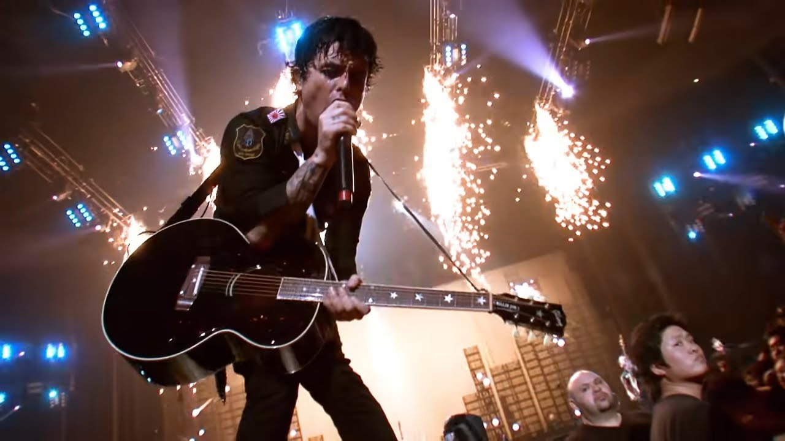 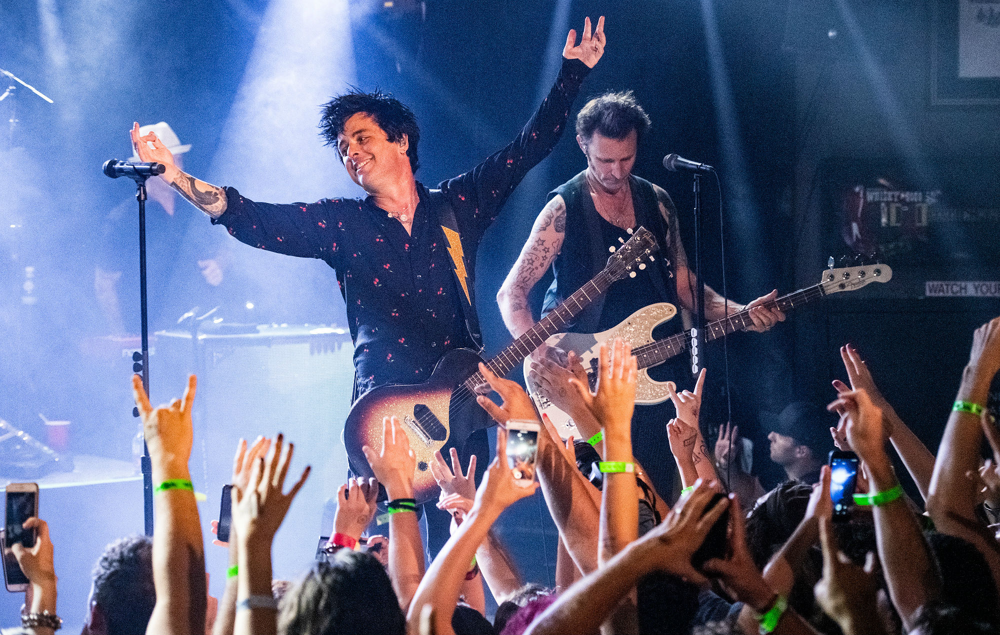 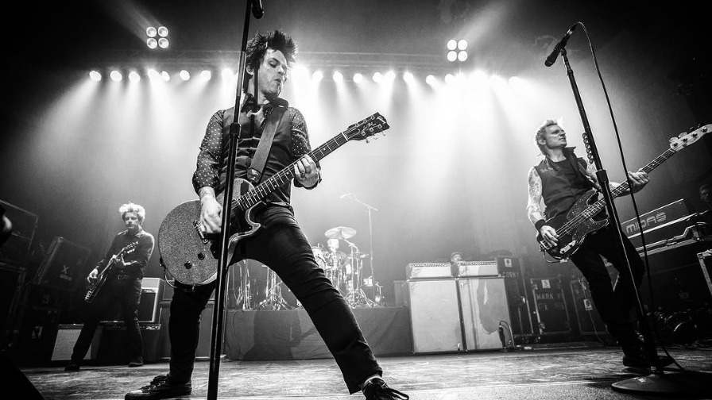 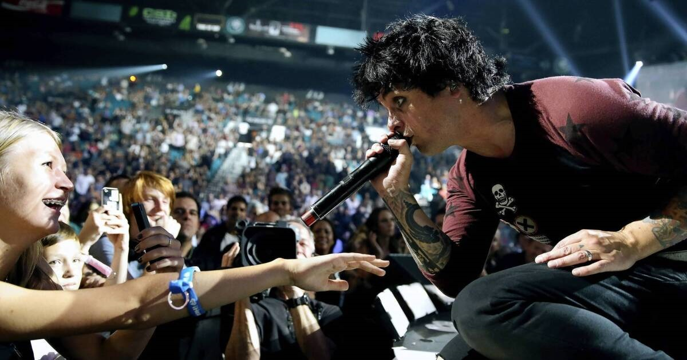 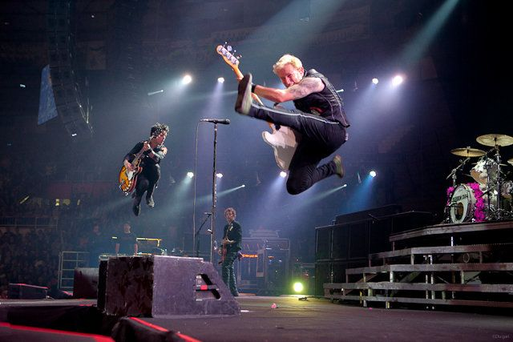 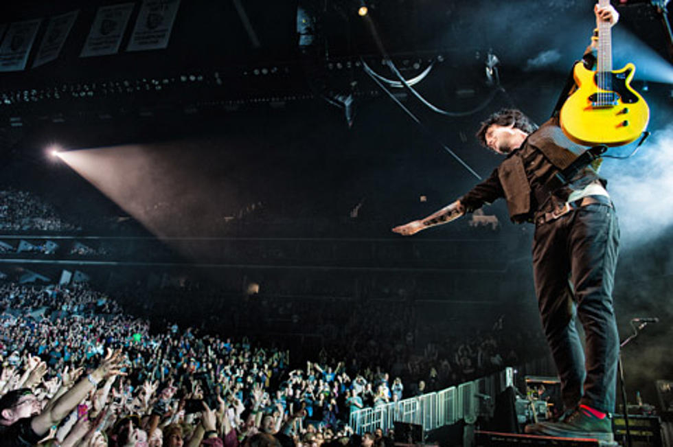 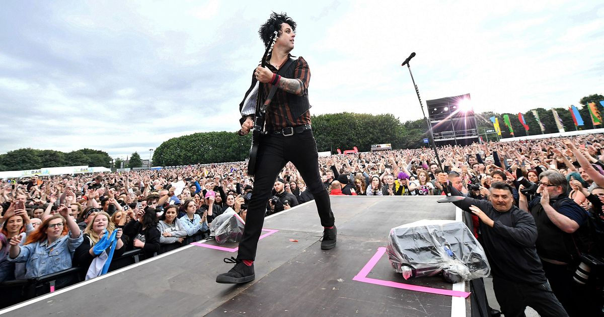 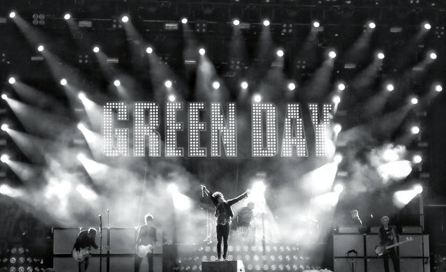 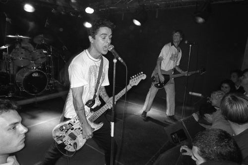These are probably the best photos taken from the Green Day shows, as you can see, people around the whole world just love them :)
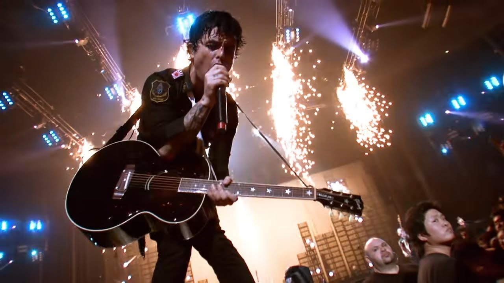 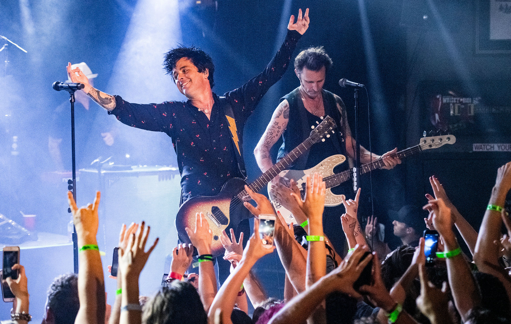 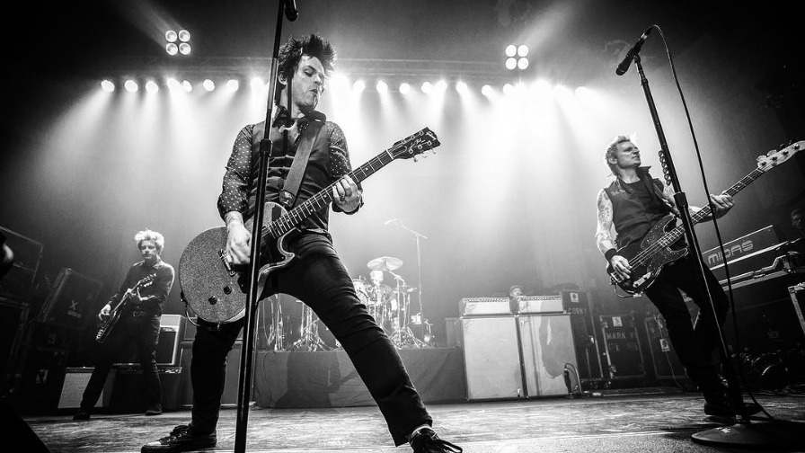 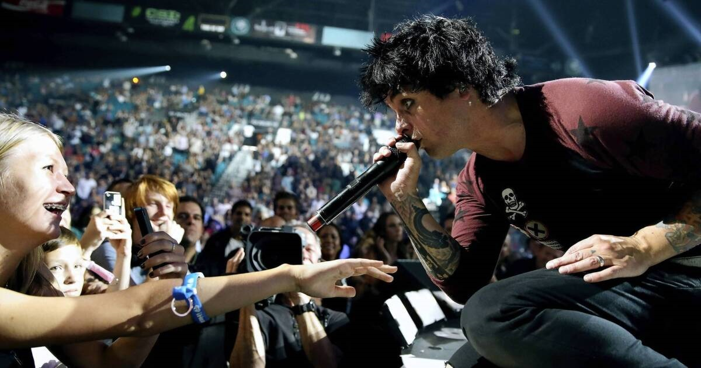 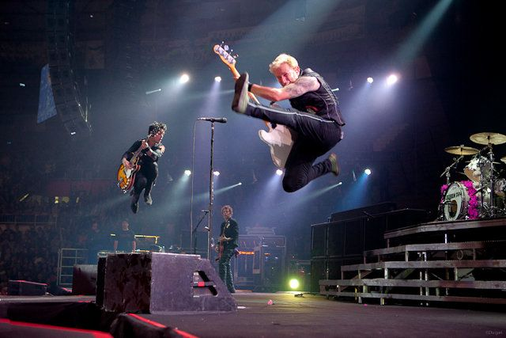 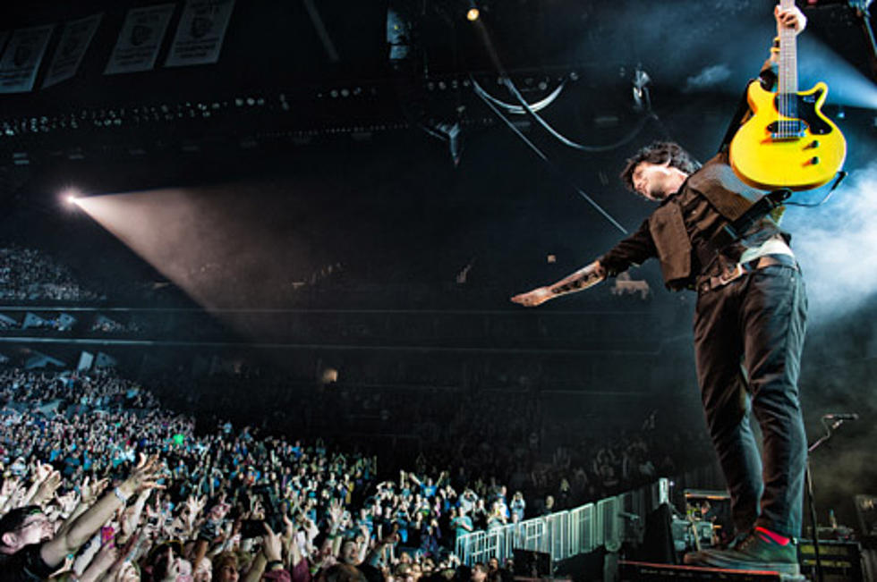 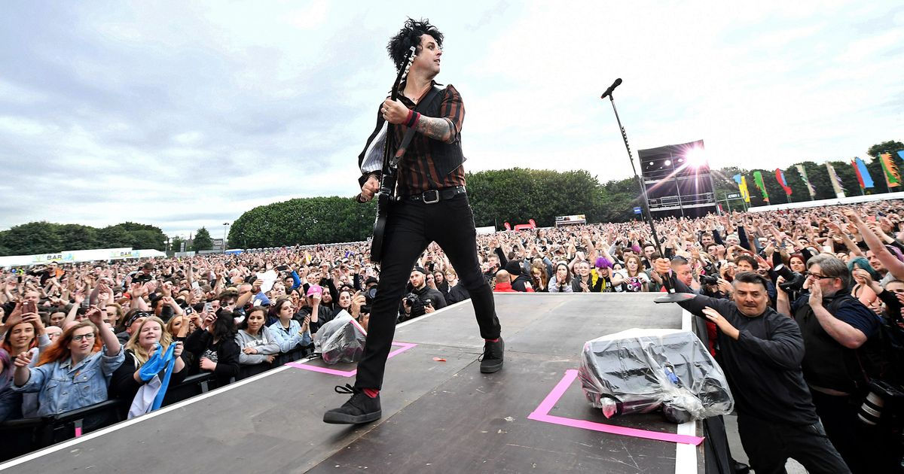 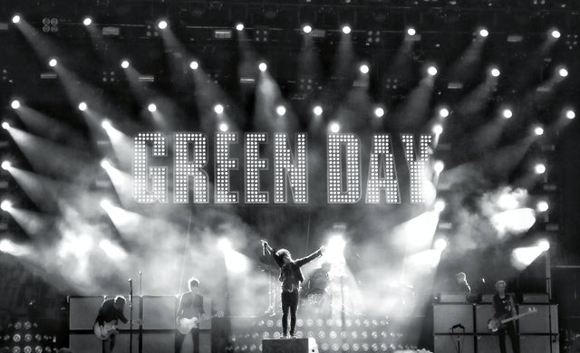 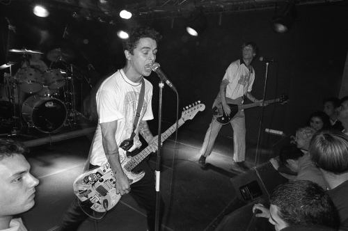